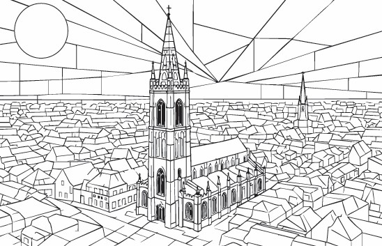
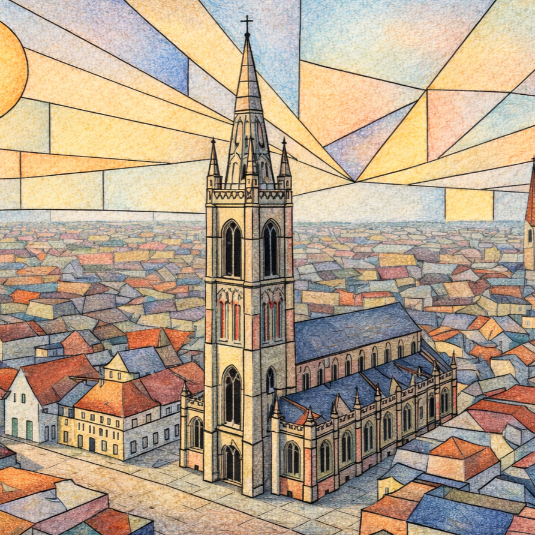

Broel Towers
One of the places or cultural icons featured in our Kortrijk colouring book, Broel Towers is reimagined with clean geometric shapes and room for creative colour.
Discover the architecture, neighbourhoods and everyday icons of Kortrijk through clean Bauhaus-inspired line illustrations, ready for your colours.
From Broel Towers to Abby Kortrijk, this edition explores the sights, local culture and visual character of Kortrijk through a gallery of line illustrations.
Designed for adults who love travel, architecture and creative downtime, the pages use bold composition and open spaces for mindful colouring.
VIEW THE KORTRIJK BOOK

PREVIEW: KORTRIJK · LINE ART & COLOUR
Discover the places and details that inspired the illustrations in this edition.
One of the places or cultural icons featured in our Kortrijk colouring book, Broel Towers is reimagined with clean geometric shapes and room for creative colour.
One of the places or cultural icons featured in our Kortrijk colouring book, Belfry of Kortrijk is reimagined with clean geometric shapes and room for creative colour.
One of the places or cultural icons featured in our Kortrijk colouring book, Kortrijk City Hall is reimagined with clean geometric shapes and room for creative colour.
A cultural highlight in Kortrijk, Budascoop Arts Centre brings art, architecture and creative life into this city-inspired colouring collection.
One of the places or cultural icons featured in our Kortrijk colouring book, Collegebrug is reimagined with clean geometric shapes and room for creative colour.
One of the places or cultural icons featured in our Kortrijk colouring book, Saint Martin’s Church Tower is reimagined with clean geometric shapes and room for creative colour.
A cultural highlight in Kortrijk, Texture Museum brings art, architecture and creative life into this city-inspired colouring collection.
One of the places or cultural icons featured in our Kortrijk colouring book, Beguinage of Kortrijk is reimagined with clean geometric shapes and room for creative colour.
One of the places or cultural icons featured in our Kortrijk colouring book, Groeninge Monument is reimagined with clean geometric shapes and room for creative colour.
One of the places or cultural icons featured in our Kortrijk colouring book, Artisan’s Creative Space is reimagined with clean geometric shapes and room for creative colour.
One of the places or cultural icons featured in our Kortrijk colouring book, Kortrijk Design Chair is reimagined with clean geometric shapes and room for creative colour.
Water, movement and the city meet at Leie River Boat, offering a distinctive scene to explore through geometric lines and colour.
Potjevleesch adds a taste of local everyday culture to the Kortrijk collection, with shapes and details ready for your own palette.
One of the places or cultural icons featured in our Kortrijk colouring book, Brouwerij Omer Vander Ghinste is reimagined with clean geometric shapes and room for creative colour.
One of the places or cultural icons featured in our Kortrijk colouring book, Golden Spurs is reimagined with clean geometric shapes and room for creative colour.
Part of the rhythm of getting around Kortrijk, Kortrijk Railway Station becomes a graphic study in lines, forms and everyday movement.
One of the places or cultural icons featured in our Kortrijk colouring book, Abby Kortrijk is reimagined with clean geometric shapes and room for creative colour.
Explore the Kortrijk edition and the wider Page Craft Studio city colouring book collection.